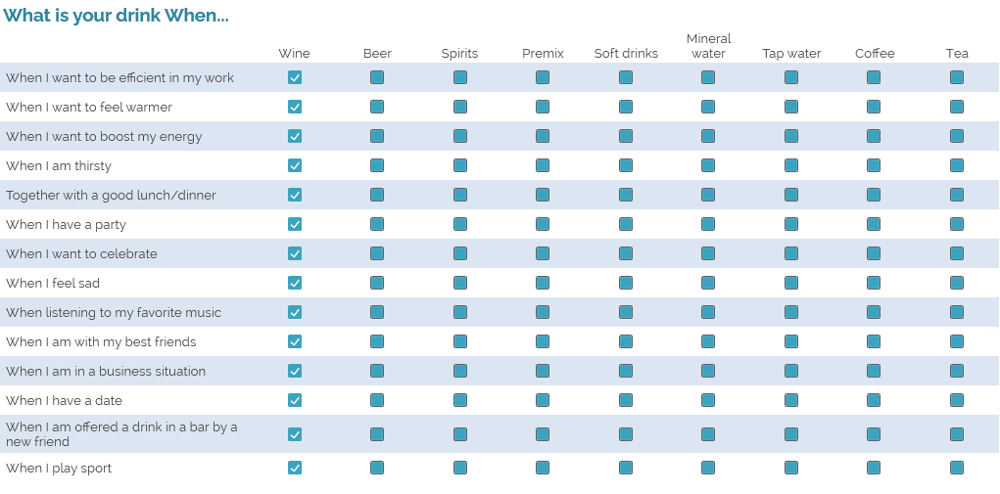
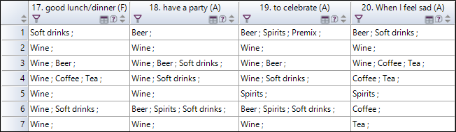

COMBINE VARIABLES
This assistant allows you to create new variables by combining them, according to four proposed methods (creation of "profile" variables, merging, transposition, or concatenation). To do so, you can:
-
From the Data tab, click on the Combine button.
-
Choose the combination type you intend to perform.

Available combination types
This assistant allows you to create a new variable whose values will be the profiles to which the observations belong (for example, for a response recorded by a French respondent, this created variable will have the value « France »).
-
Select your profiles from the sample filters of the survey (refer to the Create sample filters section).
NOTE: You can create sample filters directly from this assistant by clicking on
 .
. -
Fill in the name of the new variable to create.
-
Choose where to insert the new variable.
-
Click on Finish.

This assistant allows to merge several closed variables.
-
Select the variables to merge.
EXAMPLE: Here we aim to merge the respondents' age with their gender (male or female) for analyses (e.g. we want to make statistics on men over 50).
-
Choose the merge method:
-
Simple merge: the modalities of the new closed multiple variable are all those for the selected variables.
-
Compound merging: the answer options of the new multiple closed variable are the options of the variable with the most choices.
-
Crossed merging: the modalities of the new closed single variable cross the modalities of the selected variables.
-
Multiple merge: the modalities of the new closed multiple variable are the names of the selected variables.
-
-
Fill in the name of the new variable to create.
-
Choose where to insert the new variable.
-
Click on Finish.


Transposing variables consists in reversing the " referential " on which a reflection is based.
EXAMPLE: In our example below, we have a question table that contains beverage situations (when is the respondent likely to drink). For each situation, he/she selects the corresponding beverages (e.g. "With a good meal", the respondent will check "Wine" and "Mineral water"). 
But it may be useful to think not in terms of situations, but in terms of drinks. So we want to know in what situations do people drink mostly wine.

-
Select the variables you want to transpose.
NOTE: The selected variables must have identical modalities.
-
Choose where to insert the new variables (at the beginning or at the end of the questionnaire).
-
Click on Finish to validate.
There will be as many variables as the question table has modalities.
EXAMPLE: In our example, the variables created will be "Wine", "Beer" etc.) and the values of these new variables will correspond to the situations chosen by the respondents in relation to the drinks (for example "Beer" could have the value "When I have a party"). 

Concatenating the texts of the responses consists in creating a text variable that gathers the contents of the responses of the selected variables.
EXAMPLE: For each image (maximum of 3) that the respondent selected, they wrote a short explanation about their choice. We therefore propose to combine these three separate comments into a single variable.
-
Select the variables you want to concatenate.
-
You can choose to ignore the non-responses (empty cells) or to take them into account (replace them by values to be filled in).
-
Fill in the name of the new variable to create.
-
Choose where to insert the new variables (at the beginning or at the end of the questionnaire).
-
Click on Finish.